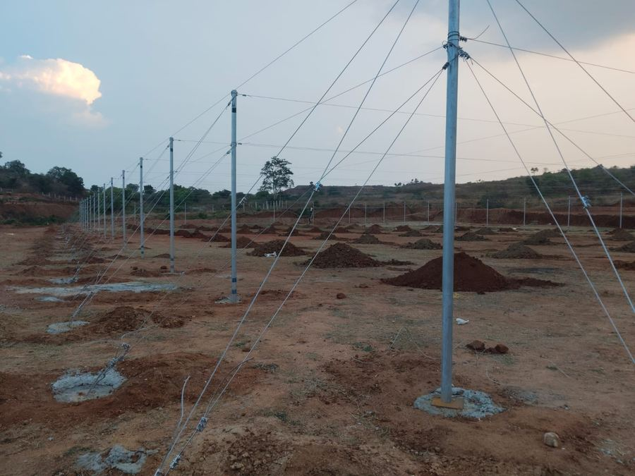
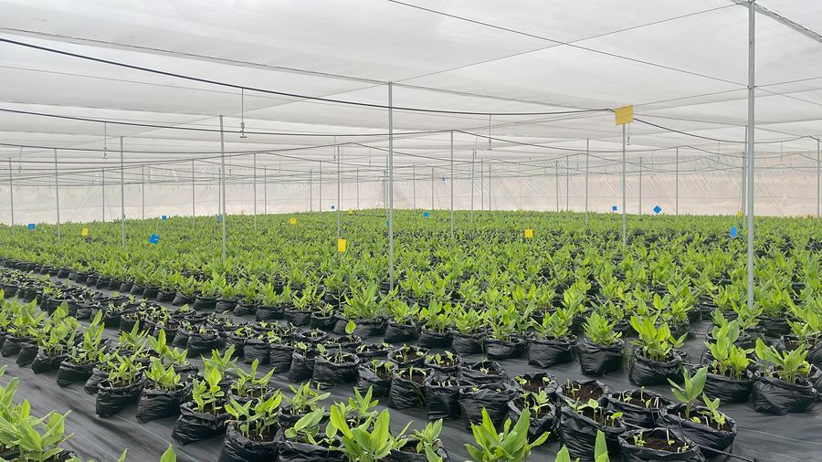
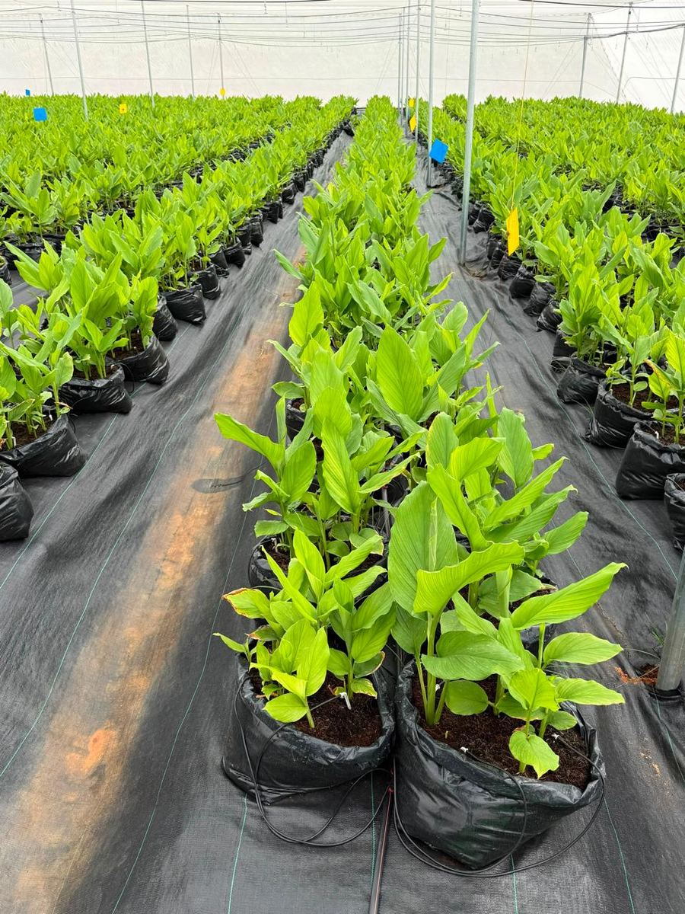
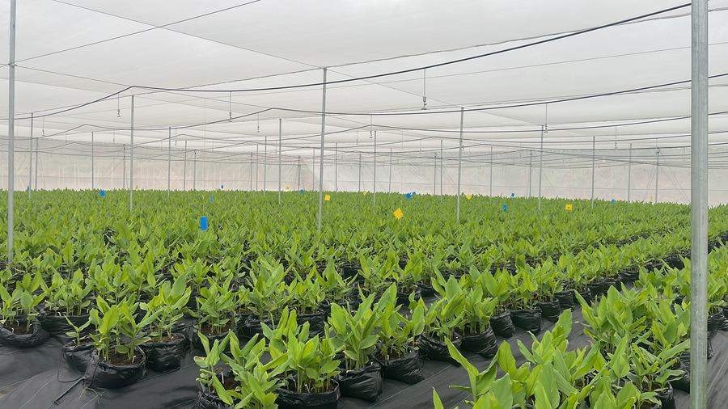

We're not hoping for 4% curcumin.
We're growing for it — and verifying it.
Melange Farms grows the Pratibha turmeric variety in a controlled, solar-powered shadenet — every input metered, every claim lab-checked.
“One shadenet. One farm. One grower accountable for every claim we make.”The Melange Farms Standard
Precision farming, not tradition on autopilot
Every claim we make about this turmeric traces back to a specific practice, on a specific farm — not an industry average.

The Farm
A 1.25-acre shadenet — 9,800 grow bags across 12 zones — growing Pratibha turmeric in pure, washed, low-EC cocopeat instead of open soil.

The Tech
Irrigation, fertigation and climate are sensor-logged in real time and run on solar power with battery backup. Every input is metered, not guessed.

Scientifically Grown
Root-zone analysis every 30 days tracks curcumin build-up. Protection is chemical-free biopesticides. At harvest: a lab-verified assay, available on request.

Traceable
Not pooled from unnamed sources — one sustainable operation, one season, one person accountable end to end: Melange Farms, Karnataka.
Follow the process, not just the result
We're publishing this ahead of harvest on purpose — the goal now is real conversations with serious buyers, not a one-off announcement once the crop is in.
Planted
Pratibha variety planted 29 June 2026, start of a 39-week cycle.
Growing — QC underway
Monthly root-zone analysis, sensor monitoring and biocontrol protocols running now; building buyer relationships ahead of harvest.
Harvest (estimated)
Lab assay, final volumes and product form confirmed at harvest.
We're not asking buyers to take our word alone
100
Founding grower member, SPICE100
SPICE100 (Strategic Portal for Indian Cultivators & Entrepreneurs) is building India's most trusted ecosystem for traceable, pesticide-residue-free, soilless-grown turmeric — connecting verified growers directly to institutional buyers and export partners.
Where things stand today: farm scale, growing method, and curcumin target (>4%, lab-verified) are confirmed and stated above. Final product form, certifications, harvest volume, and pricing are still being finalized as harvest approaches — ask us for the latest.
Built for buyers who need documented, verifiable sourcing
Nutraceutical & Ayurvedic brands
R&D and procurement teams who need a verifiable curcumin number, not a claim.
Spice wholesalers & importers
Traders and export partners sourcing clean, traceable raw turmeric.
Food & beverage manufacturers
Buyers who need consistent, lab-checked supply for formulation.
Private-label & D2C brands
Retailers and D2C teams who want a named farm behind their sourcing story.
Come see the farm behind the numbers
Harvest is still months out — that's the right time to start the conversation, not after. Get in touch for lab reports, farm details, or to be first in line as harvest data comes in.
Email Melange Farms melangefarmsblr@gmail.com